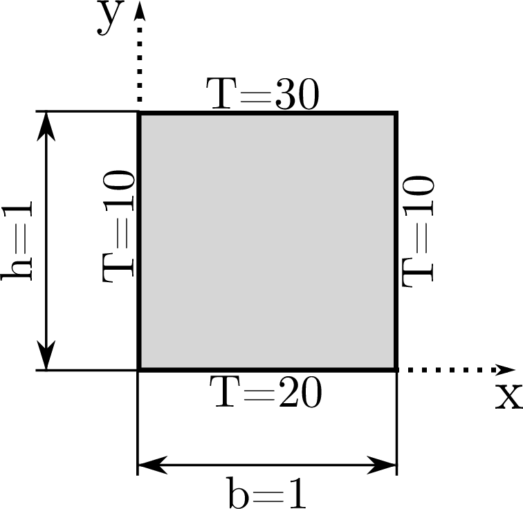
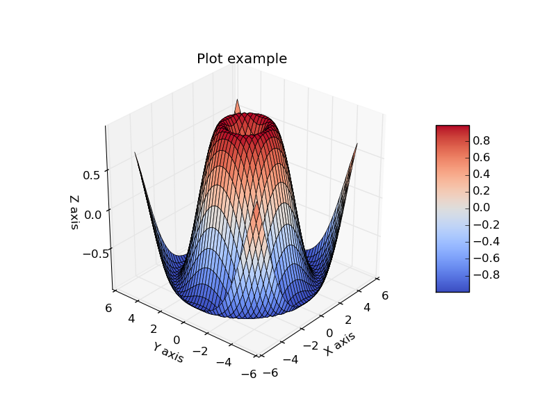

In this exercise we shall solve an elliptical PDE. We are going to find the stationary solution of the temperature field in a quadratic beam cross-section, see Figure 1. The temperature is known on the surface of the beam, so this is a problem with Dirichlet boundary conditions.
Figure 1: Beam cross-section.

If we assume isotropic heat conduction (heat conduction coefficient is equal in all directions) we can write the stationary heat conduction equation as $$ \begin{equation} \frac{\partial^2 T}{\partial x^2}+\frac{\partial^2 T}{\partial y^2}=0 \label{eq:pde} \end{equation} $$
Discretize the geometry with equal number of nodes in \( x \)-, and \( y \)-direction (choose a suitable step size). Choose a suitable difference scheme, and find the stationary temperature field in the beam cross-section (solution of \eqref{eq:pde}) numerically.
Hint. One way of showing the results is to use a 3D-plot of the temperature distribution over the beam cross-section. Here follows an example of how this may be done:
# pexercises/pexercise4/surfaceplotexample.py
from mpl_toolkits.mplot3d import Axes3D
from matplotlib.cm import coolwarm
import matplotlib.pyplot as plt
import numpy as np
# defining variables
x = np.linspace(-5, 5, 40)
y = np.linspace(-5, 5, 40)
R = np.zeros((40, 40))
for i in range(0,40):
for j in range (0,40):
R[i,j] = np.sqrt(x[i]**2 + y[j]**2)
T = np.sin(R) # calculate function to plot
# plotting
def plot3D(x, y, p):
fig = plt.figure(figsize=(11,7), dpi=100)
ax = fig.gca(projection='3d') # generates 3d axes
X,Y = np.meshgrid(x,y) # creates matrices X and Y with dimension Nx times Ny from row and column vectors x and y with dimension Nx and Ny, respectively.
surf = ax.plot_surface(X,Y,p[:], rstride=1, cstride=1, cmap=coolwarm,linewidth=0.5, antialiased=False) # plots the surface
ax.set_zlim3d(np.min(T), np.max(T)) # sets axis limits
fig.colorbar(surf, shrink=0.5, aspect=5) # adds a colorbar
ax.view_init(elev=30., azim=-140) # defines the initial viewing angle
plt.xlabel('x-values')
plt.ylabel('y-values')
fig = plot3D(x, y, T)
plt.title('Example plot')
plt.savefig('surfaceplotexample.png', transparent=True)
plt.show()
The code above produces the following figure:
Figure 2: Example plot.
